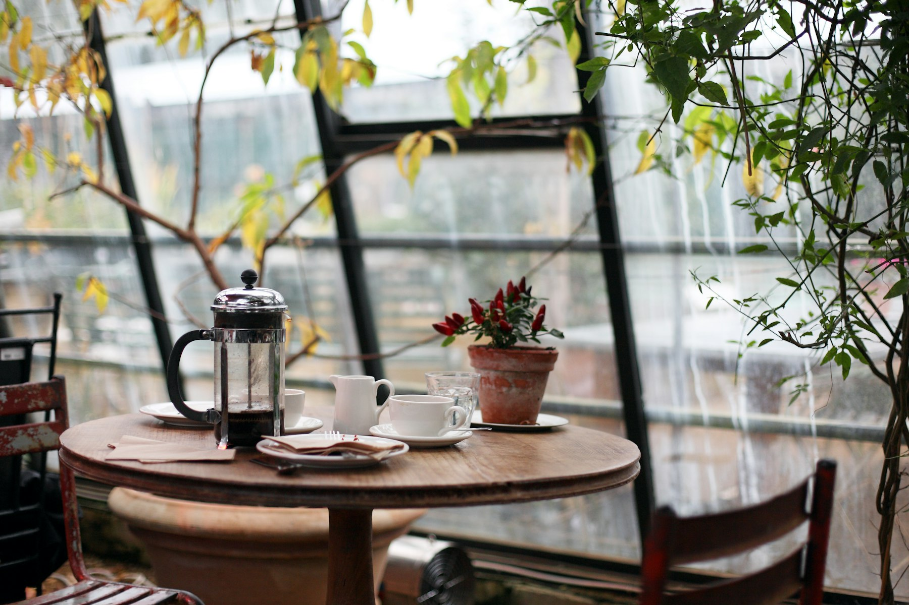
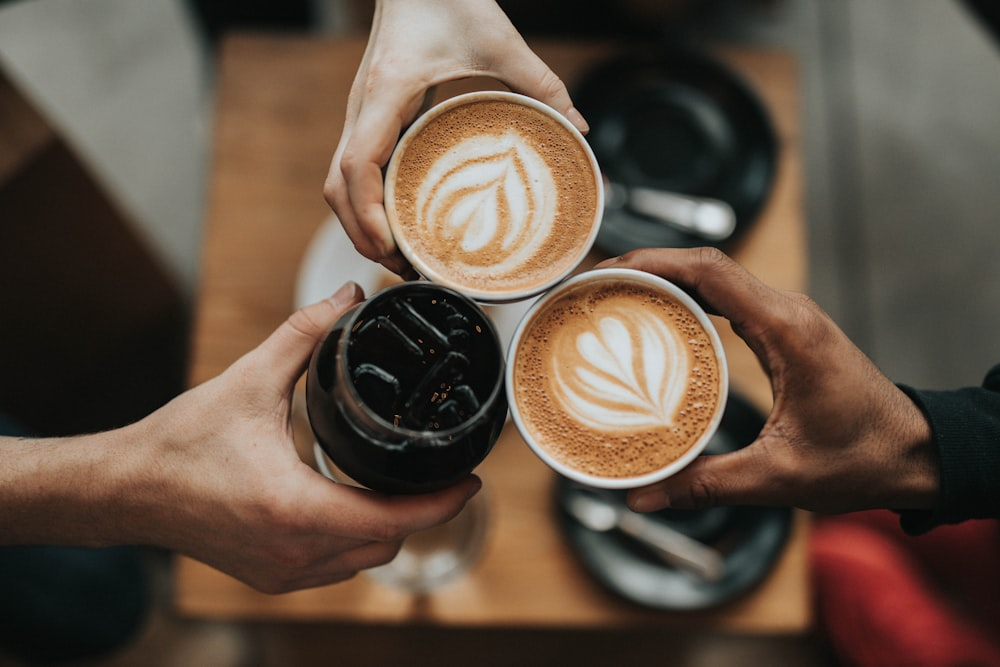

Coffee · Pizza · Good company
Coffee and pizza,
made for your table.
Pociato Coffee & Pizza brings artisan Neapolitan pizza, comforting food and great coffee together across Selangor and Cyberjaya.
The Pociato table
Pizza with soul.
Coffee with character.
From a quick coffee to a long meal with friends, Pociato is a place to settle in over food made with care.
Now serving multiple locations
Made for sharing
Good food has a way of bringing people together.
Come for the coffee, stay for the pizza, and make a little more room at the table.

From our socials
What’s happening at Pociato.
Fresh pizza moments, new drinks and cafe news, shared straight from Pociato’s social channels.
Come say hello
Find your Pociato
Choose the Pociato location closest to you and get directions in a tap.